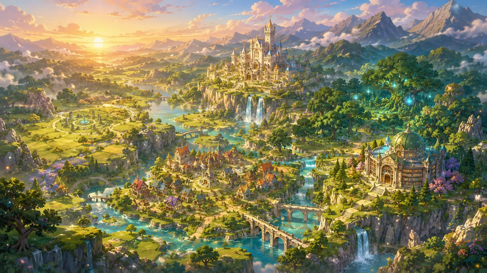

Explora Whisper Valley
Desde antiguos bosques hasta montañas sagradas.

Valle del Primer Eco
Lugar donde comienza la aventura de Lior.

Whisper Valley
El corazón del reino.

Bosque de los Susurros
Un bosque donde los árboles recuerdan el pasado.

Biblioteca Ancestral
Miles de manuscritos conservan la memoria del reino.

Río de la Memoria
Las aguas muestran recuerdos olvidados.

Montañas del Eco
El punto más alto de Whisper Valley.